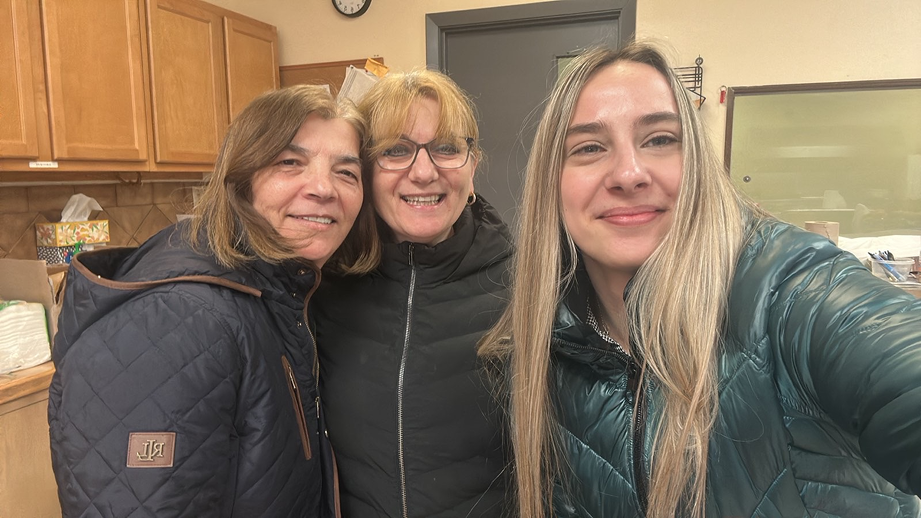
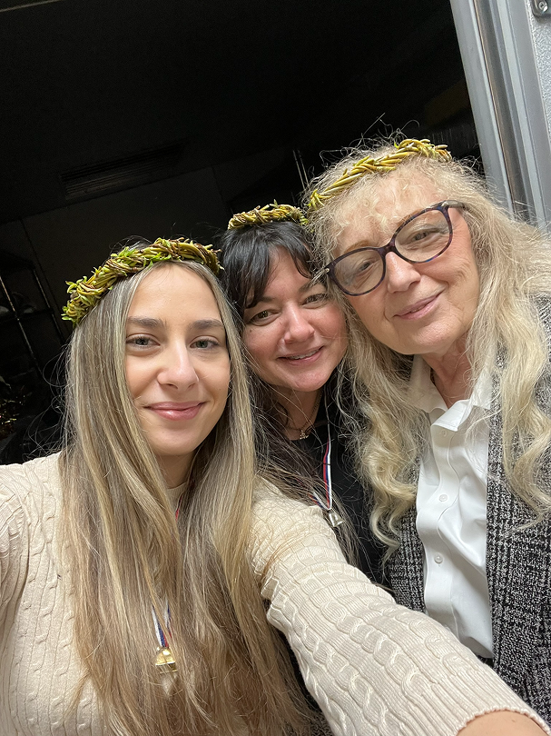
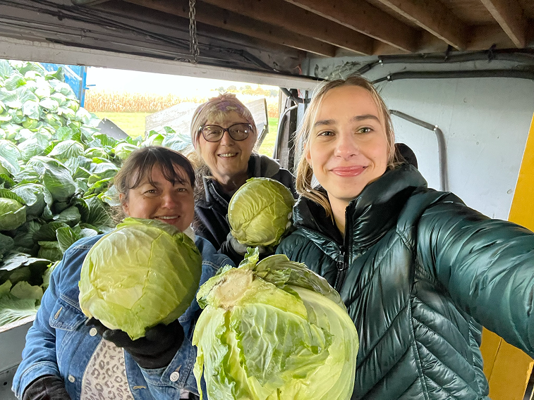
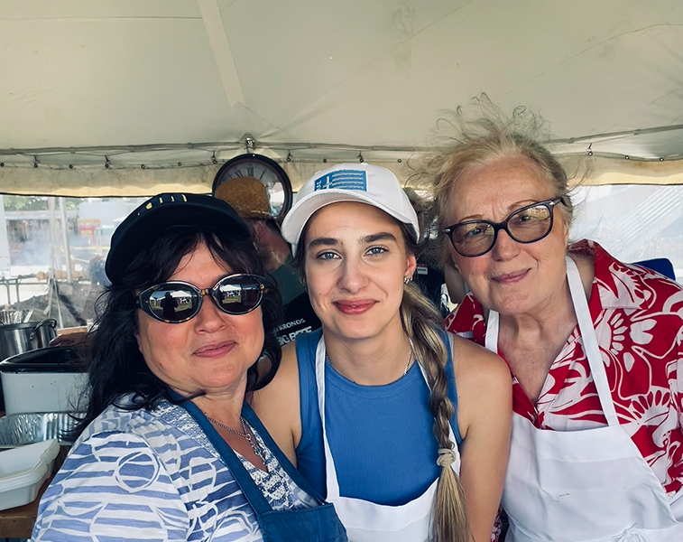

Rooted in Faith
From an early age, Iva was immersed in Orthodox tradition, where faith was not just practiced, but lived daily through family, worship, and parish life.
A story of faith, service, heritage, and community.
From an early age, Iva was immersed in Orthodox tradition, where faith was not just practiced, but lived daily through family, worship, and parish life.
As she matured, her connection to the church deepened through service, participation, and a growing sense of responsibility to her community.
Iva dedicates her time to volunteering, helping organize events, and supporting parish activities that bring people together.
Today, she focuses on preserving tradition while encouraging younger generations to stay connected to faith and heritage.




